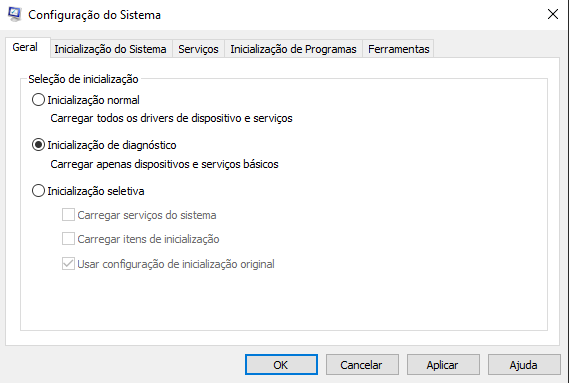

Muitas vezes erros no computador podem estar sendo causados não por arquivos corrompidos do sistema nem por setores defeituosos do disco, e sim por um programa instalado ou até mesmo um vírus em execução, para saber essa diferença é simples, basta executar uma inicialização segura do Windows. 
Numa inicialização segura apenas os programas básicos são iniciados. Se ao efetuarmos uma inicialização segura um problema desaparecer, isso indica que ele estava sendo causado por algo instalado no Windows.
Para configurar a inicialização pressione ⊞+R, digite msconfig e pressione enter.
Podemos efetuar dois tipos de inicialização segura:
Apenas Itens de Inicialização: Na guia Inicialização do Sistema selecione Inicialização Segura e marque a opção “Mínima”. Na guia Serviços marque a opção “Ocultar todos os serviços da Microsoft”, em seguida clique em “Desativar Tudo”.
A configuração acima fará com que apenas os serviços do sistema operacional iniciem com o Windows.
Inicialização de Diagnóstico: Caso com a inicialização acima o problema persista, você ainda pode efetuar uma inicialização de diagnóstico para tirar sua dúvida. Na guia Geral, marque “Inicialização de Diagnóstico”. Isso fará com que apenas os serviços mais básicos do computador sejam iniciados.
Quando não precisar mais, lembre-se de abrir o msconfig novamente e configurá-lo para inicialização normal, caso contrário seu computador só iniciará os serviços básicos e alguns programas poderão não funcionar corretamente.